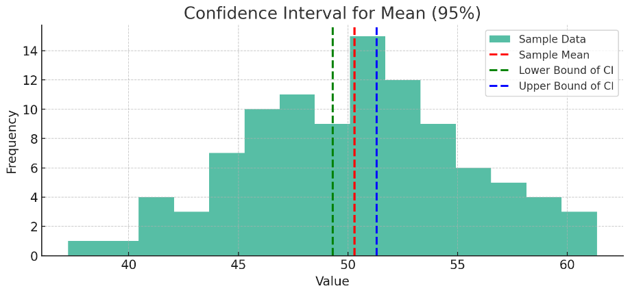
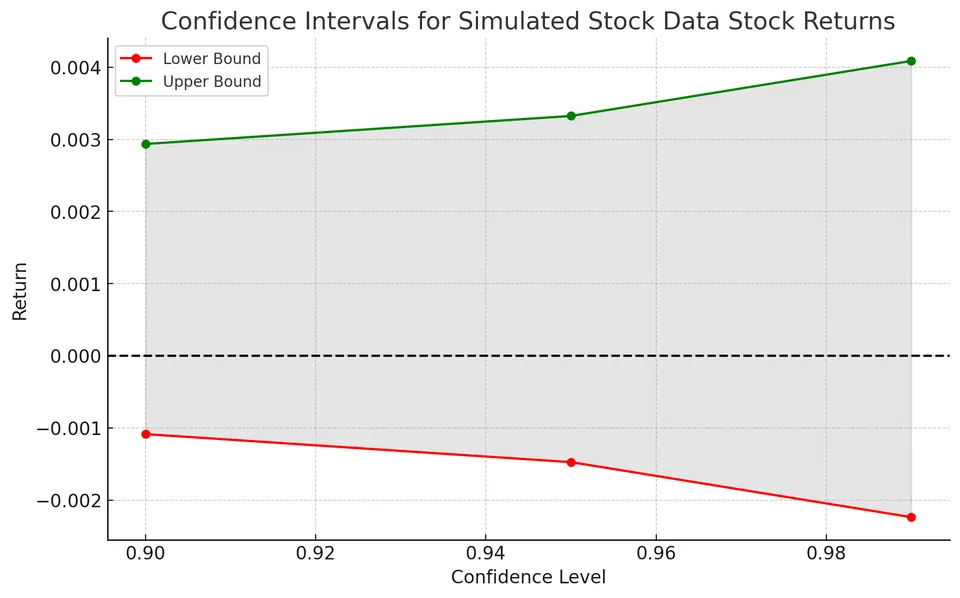

A confidence interval (CI) is a range of plausible values for a population parameter, such as a mean or proportion, calculated from sample data. It supplements a point estimate by showing the uncertainty around that estimate.
Many common confidence intervals can be written as:
$$ (\text{Point Estimate} - \text{Margin of Error}, \ \text{Point Estimate} + \text{Margin of Error}) $$
where:
The margin of error is often:
$$ \text{Margin of Error} = \text{Critical Value} \times \text{Standard Error} $$
The confidence level, commonly 90%, 95%, or 99%, describes the long-run coverage rate of the interval-construction method. Holding everything else fixed, a higher confidence level produces a wider interval: coverage increases, but precision decreases.
A confidence interval is not limited to one particular probability distribution. Confidence intervals can be constructed for many different population parameters and data-generating distributions.
What changes is the method used to build the interval.
For example:
The key requirement is that we know, estimate, or approximate the sampling distribution of the estimator.
For many common intervals, the general form is:
$$ \text{Estimate} \pm \text{Critical Value} \times \text{Standard Error} $$
but the critical value and standard error depend on the situation.
Confidence intervals can also be:
Therefore, confidence intervals are broadly applicable, but not every confidence-interval formula works in every setting. The method must match the parameter, sample size, data type, and assumptions.
Suppose we simulate sample data from a population with a true mean of 50 and a standard deviation of 5. From the sample, we calculate the sample mean and construct a confidence interval around it.

In the plot:
A single interval either contains the true population mean or it does not. The 95% confidence level refers to the method: over many repeated samples, approximately 95% of intervals constructed in this way would contain the true mean.

The plot shows confidence intervals for simulated stock returns at 90%, 95%, and 99% confidence levels.
The 90% interval is narrower and therefore more precise, but its long-run coverage is lower. The 99% interval is wider, providing higher coverage at the cost of precision.
Suppose the true approval rate among 150 million likely voters is 62%, and a poll surveys 1,200 voters to estimate that rate. Because the poll uses a sample rather than the full population, the estimate is subject to sampling variability. The standard error (SE) quantifies that variability.
In practice, the true approval rate is unknown. Here, the known value is used only to illustrate the sampling behavior of the estimator.
For a sufficiently large random sample, the sampling distribution of a sample proportion is approximately normal. If the population proportion is $p$, its theoretical standard error is:
$$ SE = \sqrt{\frac{p(1-p)}{n}} $$
where:
Substituting the values:
$$ SE = \sqrt{\frac{0.62 \times 0.38}{1{,}200}} = \sqrt{0.0001963} \approx 0.014 $$
Thus, the standard error is approximately 0.014, or 1.4 percentage points.
In practice, the population proportion $p$ is unknown, so it is usually replaced by the observed sample proportion $\hat{p}$ when estimating the standard error.
A 95% confidence interval uses the critical value $z^* = 1.96$. The common approximation of two standard errors is close, but 1.96 is more precise.
Suppose the poll reports a sample proportion of 60%. The estimated standard error is:
$$ SE = \sqrt{\frac{0.60(0.40)}{1{,}200}} \approx 0.0141 $$
The confidence interval is:
$$ \text{Confidence Interval} = \hat{p} \pm z^* \times SE $$
where:
Therefore:
$$ 0.60 \pm 1.96(0.0141) \approx 0.60 \pm 0.0276 $$
or approximately:
$$ 57.2\% \text{ to } 62.8\% $$
Using the rough critical value of 2 gives a very similar result.
The population parameter is fixed, while the confidence interval varies from sample to sample. Therefore:
Common confidence levels and their approximate standard-normal critical values are:
| Confidence level | Critical value $z^*$ |
|---|---|
| 90% | 1.645 |
| 95% | 1.960 |
| 99% | 2.576 |
A confidence interval based on a normal approximation is:
$$ \text{Estimate} \pm z^* \times SE $$
where the estimate is a sample statistic and $SE$ is its standard error.
For a confidence interval for a mean, the $t$-distribution is generally used instead of the standard normal distribution when the population standard deviation is unknown, especially for small samples.
When an unknown population quantity appears in the standard-error formula, it is often replaced by a sample estimate. This is called a plug-in estimate. For example, $\hat{p}$ can replace an unknown population proportion $p$, and the sample standard deviation $s$ can replace an unknown population standard deviation $\sigma$.
A bootstrap estimate is different: it repeatedly resamples the observed data with replacement and uses the variability of the resulting estimates to approximate the standard error.
For a sample proportion of 60% from a sample of 1,000 people:
$$ SE = \sqrt{\frac{\hat{p}(1-\hat{p})}{n}} $$
where:
Substituting the values:
$$ SE = \sqrt{\frac{0.60 \times 0.40}{1{,}000}} = \sqrt{0.00024} \approx 0.0155 $$
The estimated standard error is therefore about 1.55 percentage points.
Using a 95% confidence level with $z^* = 1.96$:
$$ \text{Confidence Interval} = 0.60 \pm 1.96(0.0155) $$
$$ \text{Confidence Interval} = 0.60 \pm 0.0304 = (0.5696,\ 0.6304) $$
Expressed as percentages, the interval is approximately 56.96% to 63.04%.
The width of a confidence interval is determined by its margin of error:
$$ \text{Margin of Error} = z^* \times SE $$
Two factors have an especially important effect:
The confidence level is the proportion of intervals that would contain the true parameter over repeated applications of the same sampling and interval-construction procedure.
For example, if we repeatedly took random samples and calculated a 95% confidence interval from each one, approximately 95% of those intervals would contain the true population parameter, provided the assumptions behind the method were satisfied.
Consider two health apps that estimate average daily steps:
App Y communicates both the estimate and its uncertainty. This makes the result more informative, assuming the sample and data-collection methods are reliable.
When the sampling distribution of a point estimate is approximately normal, a 95% confidence interval can be written as:
$$ \text{Point Estimate} \pm 1.96 \times SE $$
The value 1.96 comes from the standard normal distribution: approximately 95% of its probability lies between $-1.96$ and $1.96$.
Suppose the mean weight in a sample of carry-on bags is 3.2 kg, with a standard error of 0.053 kg. Assuming the normal approximation is appropriate, the 95% confidence interval is:
$$ \text{Confidence Interval} = \text{Sample Mean} \pm (\text{Critical Value} \times \text{Standard Error}) $$
$$ 3.2 \pm 1.96(0.053) = 3.2 \pm 0.10388 = (3.09612,\ 3.30388) $$
Thus, the estimated population mean weight is between approximately 3.096 kg and 3.304 kg at the 95% confidence level.
Suppose a digital thermometer is tested repeatedly at a known reference temperature. A confidence interval can be used to estimate the thermometer's mean reading at that reference temperature. It does not, by itself, describe the accuracy of every individual future reading.
A 95% confidence interval for the mean reading $T$ can be written as:
$$ CI = T \pm \text{Critical Value} \times SE $$
where:
If the population standard deviation $\sigma$ is known:
$$ SE = \frac{\sigma}{\sqrt{n}} $$
where $n$ is the number of trials.
Suppose 30 trials produce a mean reading of 37.0°C and a sample standard deviation of 0.5°C:
$$ SE = \frac{0.5}{\sqrt{30}} \approx 0.091 $$
Using the normal critical value as an approximation, the 95% confidence interval is:
$$ CI = 37.0 \pm 1.96(0.091) \approx 37.0 \pm 0.178 = (36.822,\ 37.178) $$
This interval estimates the thermometer's mean reading under the test conditions. Because the standard deviation was estimated from the sample, a $t$ critical value would be more appropriate for the usual small-sample calculation.
A common mistake is to interpret a 95% confidence interval as meaning, “There is a 95% chance that the true mean lies within this specific interval.”
Under the frequentist interpretation, the population parameter is fixed and the interval is random before the data are observed.
The correct interpretation is that the method used to construct the interval captures the true population parameter in approximately 95% of repeated samples, assuming its conditions are met.
For a normally distributed point estimate with known standard error:
$$ \text{Point Estimate} \pm z^* \times SE $$
Here, $z^*$ is the critical value for the selected confidence level, and $z^* \times SE$ is the margin of error.
Suppose blood-pressure readings are normally distributed, the population standard deviation is 12 mmHg, and a random sample of 50 patients has a mean of 130 mmHg. We can calculate 90% and 99% confidence intervals for the population mean.
$$ SE = \frac{\sigma}{\sqrt{n}} = \frac{12}{\sqrt{50}} \approx 1.697 $$
For 90% confidence:
$$ 130 \pm 1.645(1.697) = 130 \pm 2.79 = (127.21,\ 132.79) $$
For 99% confidence:
$$ 130 \pm 2.576(1.697) = 130 \pm 4.37 = (125.63,\ 134.37) $$
The 99% confidence interval is wider than the 90% confidence interval. This illustrates the trade-off between higher confidence and greater precision.
A confidence interval estimates a population parameter, such as the population mean. A prediction interval gives a range of plausible values for a single future observation.
A prediction interval is wider because it must account for both:
For a normally distributed population with known $\sigma$, a 95% prediction interval for a new observation $X_{\text{new}}$ is:
$$ \bar{x} \pm z_{1-\alpha/2}\sigma\sqrt{1+\frac{1}{n}} $$
When $\sigma$ is unknown and estimated by the sample standard deviation $s$, the $t$-distribution is used:
$$ \bar{x} \pm t_{1-\alpha/2,\,n-1} s\sqrt{1+\frac{1}{n}} $$
| Aspect | Confidence interval | Prediction interval |
|---|---|---|
| Target | Population parameter, such as $\mu$ | One future observation |
| Width | Narrower | Wider |
| Effect of increasing $n$ | Typically shrinks toward zero | Approaches a nonzero width determined by the underlying variability |
This distinction is especially important in regression. At a given value of $x$, a confidence interval for the mean response is narrower than a prediction interval for one new response.